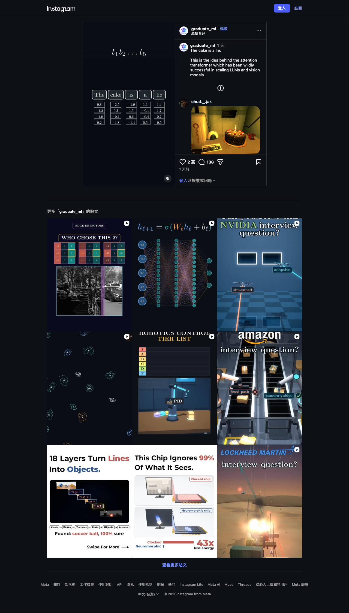
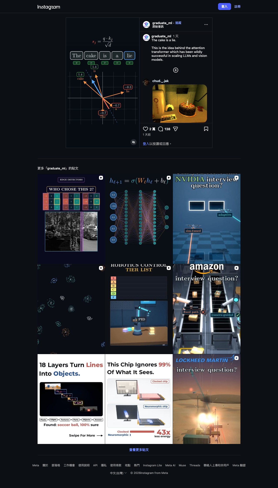
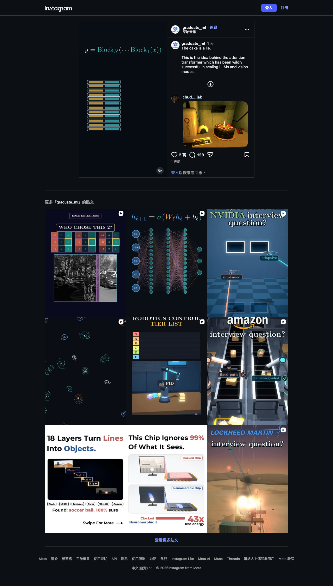

Instagram｜「The cake is a lie」解釋 Attention：從 token 向量、QK 分數到 Transformer Block
一句話摘要
這支影片以一句梗句把注意力機制視覺化：每個詞不再只看鄰近詞，而是依問題中的位置，衡量序列裡其他詞與自己的關聯，再把重要資訊加權帶回來。這是理解 Transformer 的好入口，但一張圖中的點積分數不等於完整模型：真正的 Transformer 還包含 softmax 正規化、多頭注意力、殘差連接、前饋網路與位置資訊。
Reel 可見內容：51.4 秒的畫面式解說
Instagram 帳號 `graduate_ml` 的 Reel 長約 51.43 秒；擷取時頁面顯示 2 萬個讚、138 則留言，貼文文字為：`The cake is a lie. This is the idea behind the attention transformer which has been wildly successful in scaling LLMs and vision models.` 本次取樣約第 4、21、42 秒，屬畫面式擷取，並非完整逐字稿：
- 約第 4 秒：`The | cake | is | a | lie` 被拆成 5 個 token，每個 token 下方配置一組浮點數。這可作為 token 向量表示的直覺圖，但畫面沒有標示向量來源、維度或訓練方式。
- 約第 21 秒：畫面寫出類似 `s_j = q · k_j / √d` 的分數式，並列出 `The`、`cake`、`is`、`a`、`lie` 與對應 value 向量的示意。這對應「一個 query 與各 key 比較」的步驟；圖中的數字和箭頭是教學性例子，沒有宣稱是實際模型計算結果。
- 約第 42 秒：畫面寫 `y = Block_N(...Block_1(x))`，下方堆疊 12 個雙色 block。這表達 Transformer 由多層 block 串接；12 層是畫面示意，不是所有 Transformer 的固定規格。



用一句話理解 Self-Attention
假設模型正在處理句中的某個位置。它會產生一個 query，並拿它和每個位置的 key 比較；較相關的位置得到較高分數。把分數除以根號下的 key 維度後，會對所有位置做 softmax，得到總和為 1 的注意力權重；最後用這些權重對所有 value 做加權和，形成該位置吸收了全句脈絡的新表示。
原始 Transformer 論文的縮放點積注意力可以寫成：
Attention(Q, K, V) = softmax(QKᵀ / √d_k)V
影片中的單一 `q · k_j / √d` 可以視為上述矩陣運算中「為第 j 個位置算一個未正規化分數」的簡化版本。要避免兩個常見誤解：
- 分數本身不是最終權重；還要經過 softmax，並與所有位置競爭。
- attention 不只是挑一個最重要的詞；它通常會依比例混合多個 value。
從單頭 Attention 到完整 Transformer Block
2017 年的 Attention Is All You Need 論文提出以 attention 為核心的 Transformer，取代當時序列模型常見的 recurrence 和 convolution。影片最後的 block 堆疊是好記法，但一個實作中的 block 至少還需要關注：
- Multi-head attention：同時以多組投影學習不同關係，例如語法關係、指代、距離或語意相近性。
- Residual connection 與 layer normalization：讓深層訓練更穩定，並保留原始訊號的通路。
- Feed-forward network：在每個 token 位置獨立做非線性轉換，補足注意力的訊息交換。
- Positional encoding 或位置嵌入：attention 本身不帶天然順序，模型需另外取得詞序或位置。
- Mask：做自回歸文字生成時，位置不能看到未來 token；encoder 與 decoder 的 mask 設計也不同。
因此，12 層 block 並不表示「每一層都只做一次 QK 點積」。它是多個子層、正規化與殘差路徑反覆組合後的深層表徵學習。
如何用這支影片做正確的學習延伸
- 先用一個 5 token 的小句子手算一列 query 對各 key 的點積，再自己做 softmax 和 value 加權和；不要只記公式形狀。
- 接著在 PyTorch 或 NumPy 檢查張量維度：單頭常見為 `(batch, sequence, d_k)`，分數矩陣則含兩個 sequence 維度。
- 把 single-head 的輸出與 multi-head concatenation 分開理解；heads 是平行表示空間，不是多跑幾次同一答案。
- 讀原始論文的 Figure 1 與 Section 3，對照 encoder、decoder、masked self-attention、cross-attention 各在何處出現。
- 想連結到 LLM 或 vision model 時，應把「使用 Transformer」與模型規模、資料、訓練目標、tokenizer／patch embedding、長度限制分開討論；Attention 是重要元件，不是單一成功原因。
證據與限制
- Reel 用於保存社群作者的教學敘事、可見公式和取樣畫面；它不是完整課程、程式實作或原始論文的替代品。
- Transformer 的架構背景與縮放點積注意力公式，以 Vaswani 等人的 Attention Is All You Need 論文及 Google Research 條目交叉核對。
- 本次未從影片推論任何特定 LLM、vision model、層數或效能結果，也沒有把 12 層圖示當成通用架構規格。
原始與查核連結
- Instagram Reel：https://www.instagram.com/reel/DeR5Ox8Ti-4/?obrf=MXNpdGJmOTNnYW9veQ==
- Attention Is All You Need：https://arxiv.org/abs/1706.03762
- Google Research：https://research.google/pubs/attention-is-all-you-need/
來源擷取紀錄：`source-archive/2026-10-09-instagram-graduate-ml-attention-transformer-explainer.json`